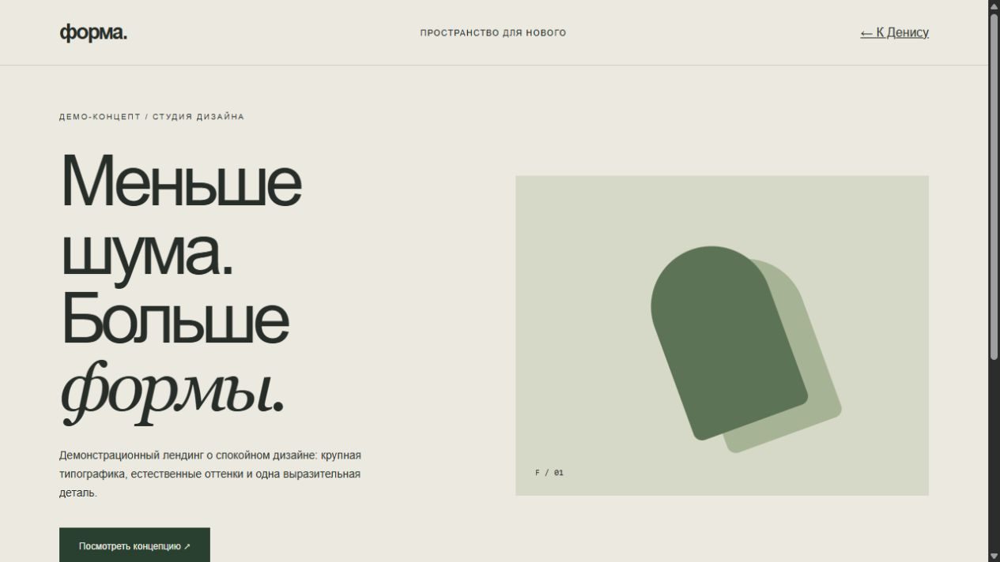
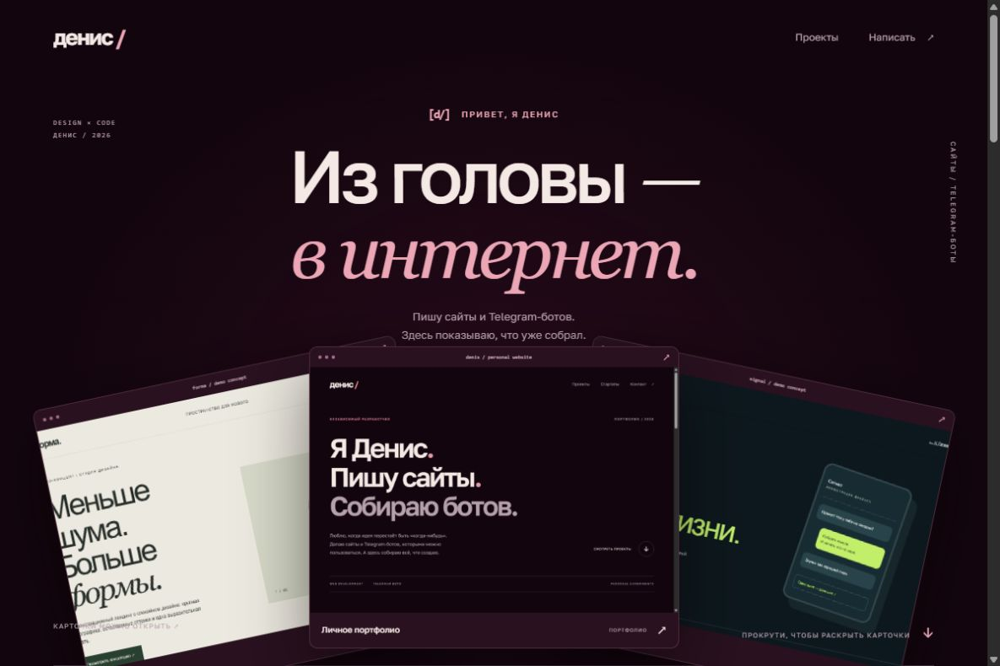
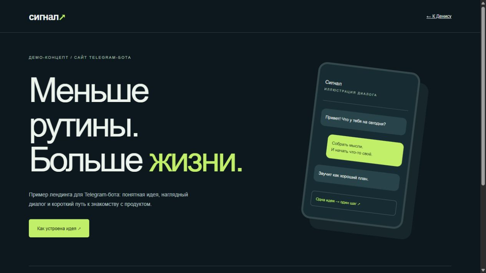

01 / ЛИЧНЫЙ ПРОЕКТ2026
Личное портфолио
Этот сайт. Здесь я представляюсь, показываю работы и оставляю контакт. Карточки раскрываются при прокрутке, а каждый проект можно открыть отдельно.
Открыть сайтПРИВЕТ, Я ДЕНИС
Пишу сайты и Telegram-ботов.
Здесь показываю, что уже собрал.



01 / РАБОТЫ
Личный сайт и два демо-макета.
Каждый можно открыть и посмотреть.
Этот сайт. Здесь я представляюсь, показываю работы и оставляю контакт. Карточки раскрываются при прокрутке, а каждый проект можно открыть отдельно.
Открыть сайтУчебный макет для вымышленной студии дизайна. Сделал первый экран, блок о студии и ссылки между разделами. Это демо, не заказ клиента.
Открыть демоДемо-страница для вымышленного Telegram-бота. На ней — описание и пример переписки. Сам бот пока не написан.
Открыть демоНовые работы буду добавлять сюда. Демо-макеты подписаны отдельно.
02 / ПОПРОБОВАТЬ
Поменяй пару настроек.
Посмотри, каким может быть проект.
Темы встреч, формат работы и свободное время.
Это пример интерфейса. Данные не отправляются.
03 / КОНТАКТ
Напиши мне в Telegram.
Обсудим, что нужно сделать.